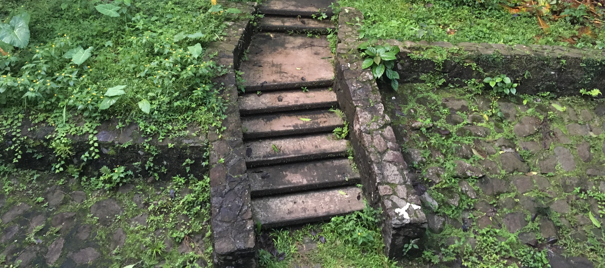
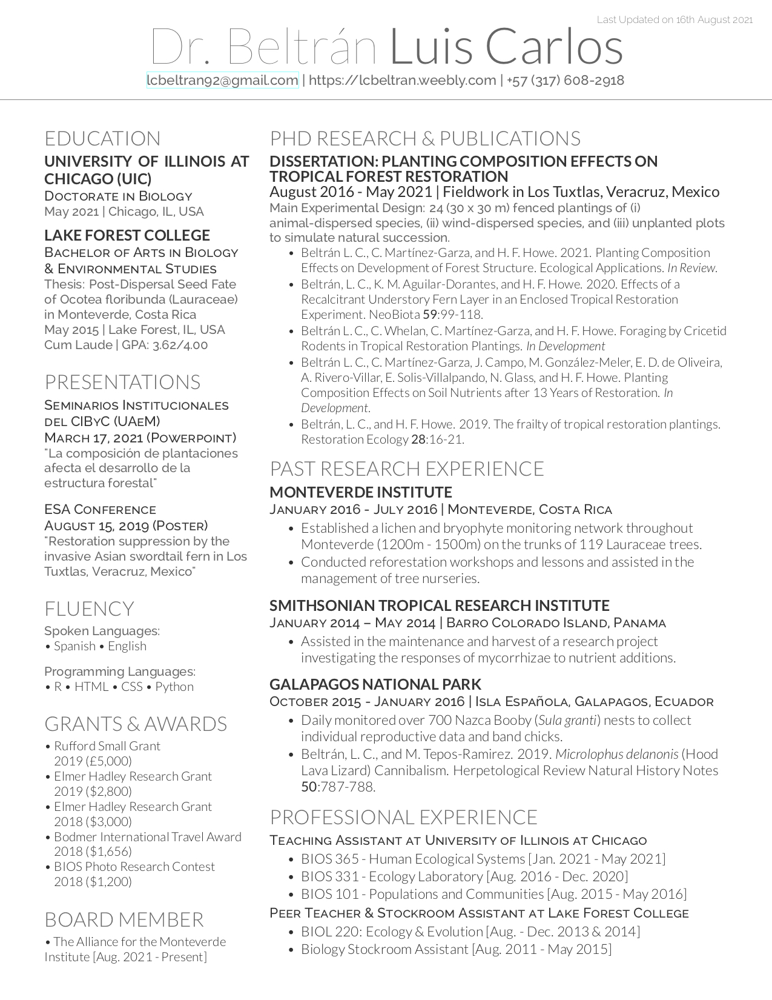

Dr. Luis Carlos Beltrán
TROPICAL RESTORATION ECOLOGIST
Home
Research
Publications & CV
Tree of Life
Contact

Publications
See Google Scholar citations
here
.
2021
Beltrán, L. C., C. Martínez-Garza, and H. F. Howe. 2021. Planting Composition Affects Development of Forest Structure. Ecological Applications.
In Review
.
Beltrán, L. C. 2021. Planting Composition Effects on Tropical Forest Restoration. PhD Dissertation. University of Illinois at Chicago.
2020
Beltrán, L. C., K. M. Aguilar-Dorantes, and H. F. Howe. 2020. Effects of a Recalcitrant Understory Fern Layer in an Enclosed Tropical Restoration Experiment. NeoBiota
59
:99-118.
2019
Beltrán, L.C., and H. F. Howe. 2019. The Frailty of Tropical Restoration Plantings. Restoration Ecology
28
:16-21.
Beltrán, L.C., and M. Tepos-Ramirez. 2019.
Microlophus delanonis
(Hood Lava Lizard) Cannibalism. Herpetological Review Natural History Notes
50
:787-788.
2015
Beltrán, L. C. 2015. Post-Dispersal Seed Fate of
Ocotea floribunda
(Lauraceae) in Monteverde, Costa Rica. Undergraduate Thesis. Lake Forest College.
Resume &
Full CV


{kind=link}